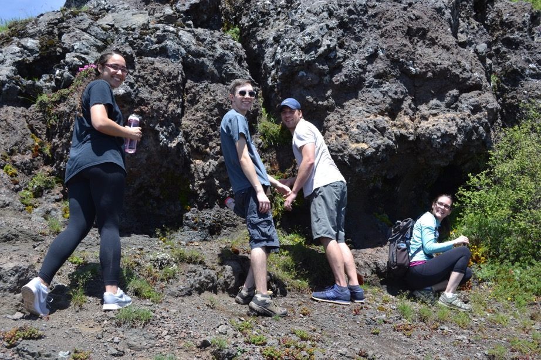

About us:
The overarching goal of our lab is to understand how populations diverge into reproductively isolated species. Does speciation occur in allopatry or do populations differentiate in the presence of some gene flow? What is the genetic basis of reproductive isolation? What are the evolutionary dynamics of loci that contribute to ecological adaptation and reproductive isolation? Our research program tackles these questions using Mimulus, a genus of tremendously diverse and experimentally tractable wildflowers.
Contact:
Sweigart Laboratory
Department of Genetics
University of Georgia
Davison Life Sciences C218
120 East Green Street
Athens, GA 30602